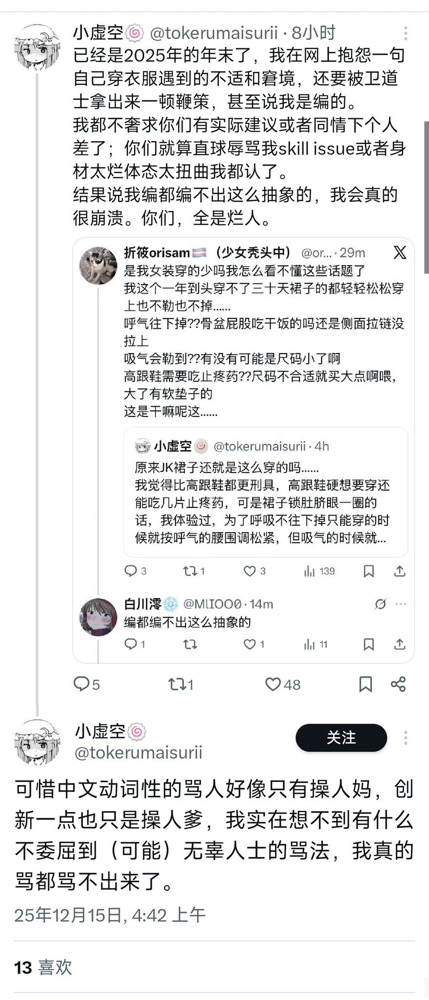
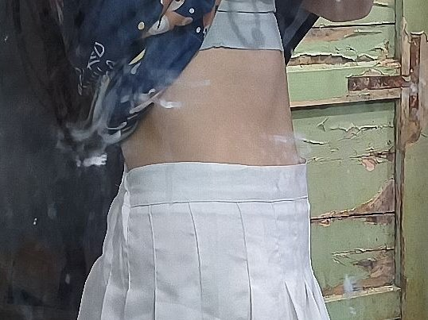
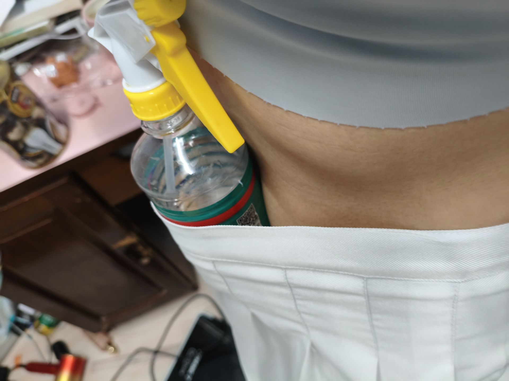

@orisam123 狐觉得可能是你reply她的语气有点重(((
虽然这种事情狐也没什么发言权(狐常年穿得像泽连斯基…)
但是从最基本的逻辑来说，尺码合适的服饰是不应当有诸如呼吸掉腰/不合脚一类的奇怪困扰的
但是女装尺码确实好难选😭
狐觉得各大指南真应该教教选尺码，按照曾经的惯性来买衣服绝对不会合身的…

虽然这种事情狐也没什么发言权(狐常年穿得像泽连斯基…)
但是从最基本的逻辑来说，尺码合适的服饰是不应当有诸如呼吸掉腰/不合脚一类的奇怪困扰的
但是女装尺码确实好难选😭
狐觉得各大指南真应该教教选尺码，按照曾经的惯性来买衣服绝对不会合身的…



这玩意在喷什么粪呢
勒?往下掉?我想的话还能再塞进去一个水瓶拿出来也不掉的
下面这段话仅对这位小虚空，其他人请勿对号入座
“我已经可以想象出来一个膀大腰圆的药猪努力把自己塞进幻想出的尺码来“感受女生生活”结果裙子撑的卡不住腰鞋子被挤的要炸开自己还觉得“美丽的刑具”就应该这样，那个画面了” https://t.co/iInx1I4Tx6
勒?往下掉?我想的话还能再塞进去一个水瓶拿出来也不掉的
下面这段话仅对这位小虚空，其他人请勿对号入座
“我已经可以想象出来一个膀大腰圆的药猪努力把自己塞进幻想出的尺码来“感受女生生活”结果裙子撑的卡不住腰鞋子被挤的要炸开自己还觉得“美丽的刑具”就应该这样，那个画面了” https://t.co/iInx1I4Tx6